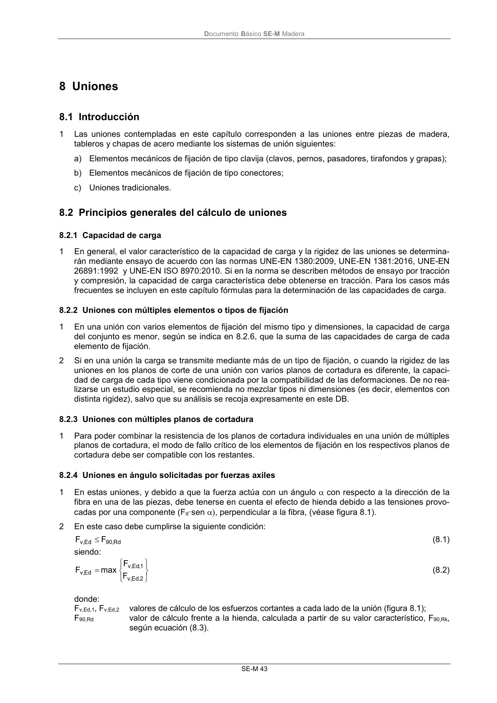

DB-SE-M Madera · edición 2019-12-20 · capa oficial
Documento DB-SE-M-oficial · SHA-256 del PDF 26b5819839ebfda78b0b119c5e76a0a37773b0d763c05688541870075df93718
Copia fiel del PDF fuente · Fuente oficial
Ficha de la disposición en la fuente oficial
Formatos: JSON del segmento · Markdown
7.3 Vibraciones 7.3.1 Generalidades 7.3.1 Generalidades 1 En las estructuras convencionales, y si se cumplen las condiciones de rigidez bajo carga estática establecidas en el CTE, no será necesario considerar en el análisis el estado limite de vibración. 2 Para el análisis se emplearán los valores medios de las propiedades de rigidez. DocumentoBásico SE-M Madera SE-M 43
